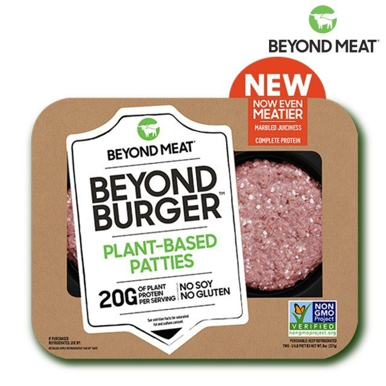

現已成為全球共同發展趨勢。東元餐飲集團旗下的摩斯漢堡、Royal Host樂雅樂家庭餐廳與台灣虛擬通路momo聯手引領台灣綠色「食」尚風潮。 引進全球知名未來肉類霸主「Beyond Meat」，摩斯漢堡推出未來漢堡「摩力蔬食堡」等系列商品；Royal Host樂雅樂則在「活力鮮蔬早午餐」系列中，
推出「未來農家鮮蔬麵包」，滿足顧客兼顧健康美味及環境永續的消費需求。

連接到1頁 連接到2頁 連接到3頁 連接到4頁